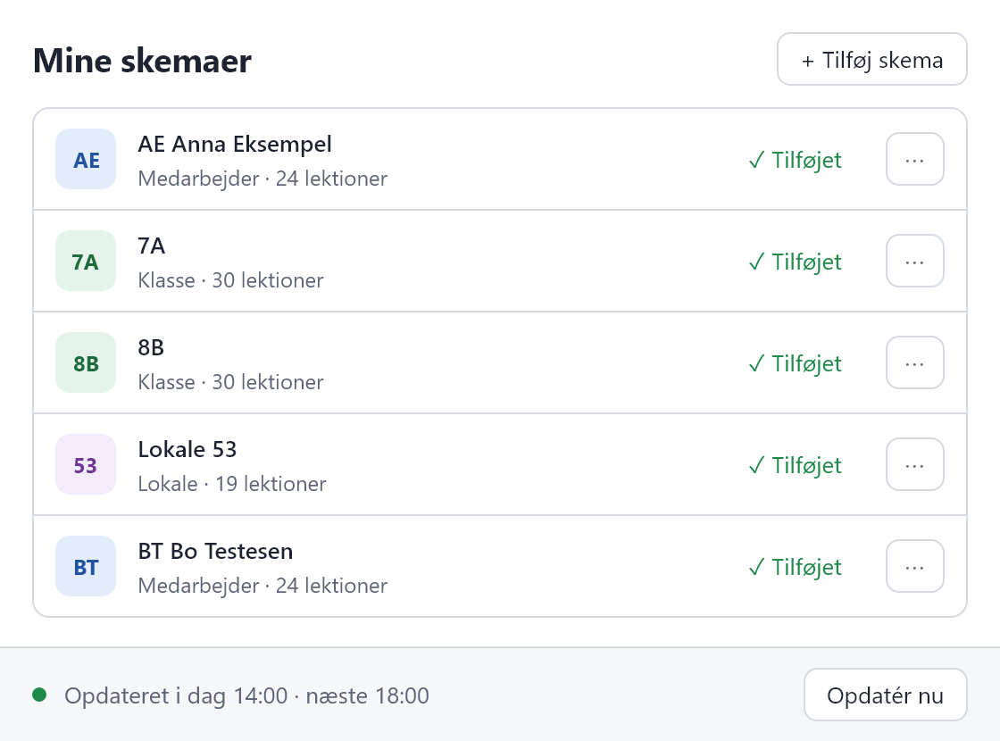
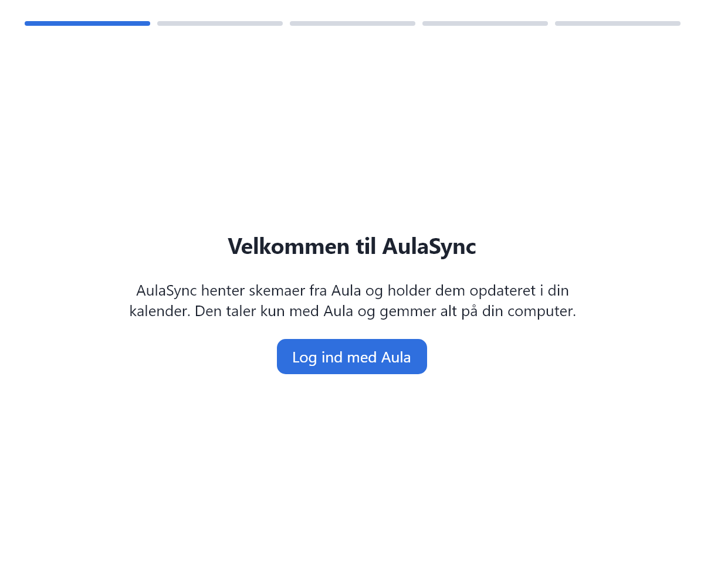
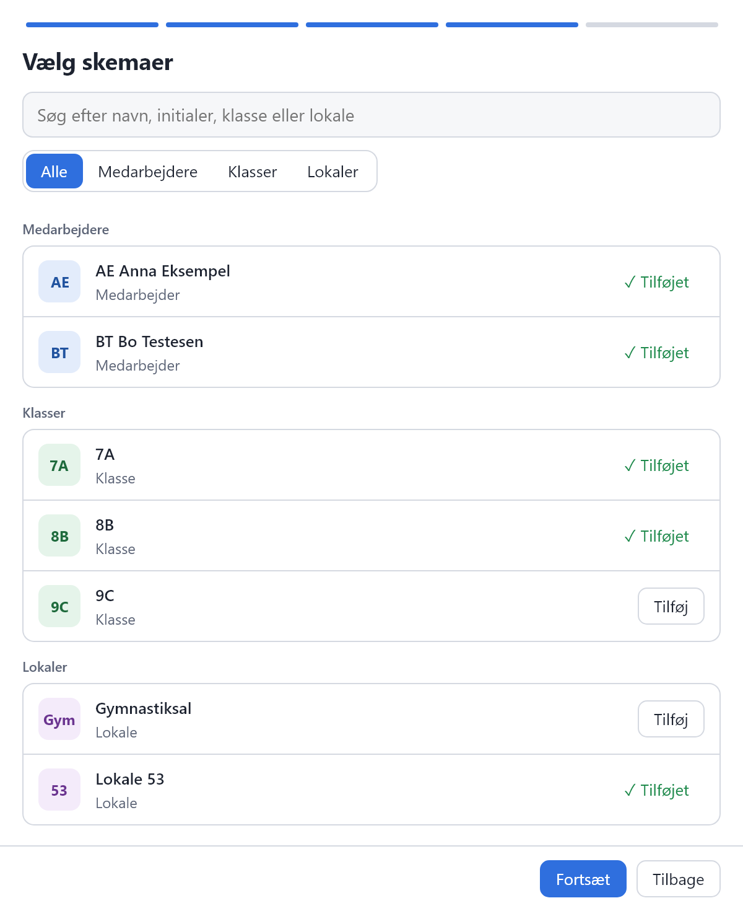

Skolesekretær og kontor
Lokaler og vikarer i samme kalender som dine egne aftaler
Følg lokalerne og de kolleger, du planlægger for. Har en lektion fået vikar, står der "Vikar" først i titlen, og beskrivelsen viser, hvem vikaren dækker for.
Til skolens medarbejdere · Windows og Mac · Gratis
AulaSync henter skemaer for dig selv, dine kolleger, klasser og lokaler fra Aula og lægger dem i din kalender. I Apple Kalender og klassisk Outlook opdaterer de sig selv, så ændringer og vikarer kommer med.
Et uafhængigt projekt. Ikke tilknyttet Aula, KOMBIT, Netcompany eller KMD.

Til hvem
Du vælger selv, hvilke skemaer du vil følge. Hvert skema bliver sin egen kalender, som du kan slå til og fra i dit kalenderprogram.
Skolesekretær og kontor
Følg lokalerne og de kolleger, du planlægger for. Har en lektion fået vikar, står der "Vikar" først i titlen, og beskrivelsen viser, hvem vikaren dækker for.
Medarbejdere
Lærere, pædagoger, inklusionsmedarbejdere og alle andre med et skema i Aula. Dine lektioner og dine klassers skemaer kommer i den kalender, du allerede bruger.
Ledelse
Læg medarbejdere, klasser og lokaler ind som hver sin kalender, og se dem side om side, når du planlægger møder, samtaler og arrangementer.
Sådan virker det
Første gang guider AulaSync dig igennem det hele. Bagefter kører den stille i baggrunden og starter selv, når du logger ind på computeren.
Log ind
Du logger ind på Aulas egen login-side med MitID, UniLogin eller din kommunes login. AulaSync gemmer ikke din adgangskode.

Vælg kalenderprogram
Apple Kalender, klassisk Outlook, ny Outlook eller et andet program. AulaSync og kalenderprogrammet skal køre på samme computer, og du kan altid ændre valget i Indstillinger.

Vælg skemaer
Dit eget skema er valgt på forhånd. Tilføj kolleger, klasser og lokaler, og tilføj flere senere, når du får brug for dem.

Tilføj til kalenderen
Knappen passer til dit program, fx Tilføj til Outlook eller Tilføj til Kalender. Bagefter kører AulaSync videre i baggrunden og henter skemaerne fra Aula hver 4. time. I Indstillinger kan du vælge alt fra hver halve time til hver 8. time, og du kan altid klikke Opdatér nu.

I kalenderen
Det vigtigste står i titlen. Åbner du lektionen, står resten i beskrivelsen.
Dansk | Lokale 53 | 7AI en klasses skema står lokale og lærerens initialer i stedet, og i et lokales skema klasse og initialer.Vikar | Dansk | Lokale 53 | 7AI beskrivelsen står, hvem vikaren dækker for, fx Vikar for: Anna Eksempel (AE).Opd. 121026@05:30Det betyder 12. oktober 2026 kl. 5.30.Det får du
Medarbejdere, klasser og lokaler bliver hver sin kalender, som du slår til og fra i kalenderprogrammet.
AulaSync henter ændringer fra Aula, og i Apple Kalender og klassisk Outlook kommer de selv med. Du vælger, hvor tit AulaSync henter: fra hver halve time til hver 8. time.
AulaSync ligger som et lille ikon i menulinjen på Mac og ved uret på Windows, og den starter selv, når du logger ind.
Fx når du skal logge ind på Aula igen, eller når et importeret skema er ændret. I vinduet kan du se, hvis dit kalenderprogram ikke har hentet et skema.
På Windows uden administratorrettigheder, også med winget. På Mac signeret og undersøgt af Apple, også med Homebrew.
Knappen Afinstallér AulaSync… i AulaSyncs Indstillinger fjerner programmet, dit login, dine indstillinger og kalenderfilerne. På Mac flyttes programmet til papirkurven. Kalenderne i dit kalenderprogram sletter du selv.
Kalenderprogrammer
| Kalenderprogram | Knappen i AulaSync | Opdateres |
|---|---|---|
| Apple Kalender (Mac) | Tilføj til Kalender | Automatisk |
| Outlook (klassisk) på Windows | Tilføj til Outlook | Automatisk |
| Ny Outlook, Outlook til Mac og Outlook på nettet | Importér… | Ikke automatisk (øjebliksbillede). AulaSync siger til, når skemaet er ændret, så du kan importere igen. |
| Andet program på samme computer, fx Thunderbird | Kopiér adresse | Automatisk |
AulaSync og kalenderprogrammet skal køre på samme computer. Skemaerne vises på den computer, hvor AulaSync kører, ikke på telefonen. Importerer du i ny Outlook eller Outlook på nettet, kan du også se skemaet på telefonen, men så opdateres det ikke af sig selv.
Data og sikkerhed
AulaSync taler kun med Aula og sender ikke dine data andre steder hen. Der er ingen statistik og ingen reklamer. Koden ligger åbent på GitHub, så alle kan se, hvad programmet gør.
Skemaer, indstillinger og dit login ligger på din computer.
Du logger ind på Aulas egen login-side. AulaSync husker dit login, så du ikke skal logge ind hver gang.
Kalenderprogrammet henter skemaerne fra en lille kalender-server i AulaSync på din egen computer. Andre computere kan ikke nå den, og hjemmesider i din browser kan ikke læse skemaerne. Andre brugere, der er logget ind på samme computer, kan dog hente dem.
Husk: Kalenderne indeholder oplysninger om dine kolleger, fx navne, initialer og hvem der er vikar for hvem. Følg din skoles og kommunes regler for, hvor de må ligge. Det gælder også, når du importerer et skema i ny Outlook, Outlook til Mac eller Outlook på nettet, som gemmer det hos Microsoft.
Hent AulaSync
AulaSync er gratis og et uafhængigt projekt, der ikke er tilknyttet Aula, KOMBIT, Netcompany eller KMD. Du skal kunne logge ind på Aula som medarbejder. Hele vejledningen står på GitHub.
Åbn filen. Viser Windows "Windows beskyttede din pc", så klik Flere oplysninger og derefter Kør alligevel. Det sker, fordi programmet ikke er signeret, så Windows ikke kan se, hvem der har lavet det. Klik så Installer. AulaSync installeres kun for dig og kræver ikke administratorrettigheder.
Eller med winget i Terminal:
winget install rpaasch.AulaSyncPå udgivelsessiden står filerne under Assets. Vælg filen, der ender på arm64.dmg, til Mac med Apple-chip (M1 og nyere), eller x64.dmg til Intel. Er du i tvivl, så vælg Om denne Mac i æblemenuen. Åbn filen, træk AulaSync over i Programmer, og åbn AulaSync derfra, ikke fra .dmg-filen. AulaSync er signeret af udvikleren og undersøgt af Apple (notariseret), så macOS spørger kun, om du vil åbne den.
Eller med Homebrew i Terminal:
brew install --cask rpaasch/tap/aulasyncSpørgsmål
Nej. AulaSync er gratis og åben kildekode under MIT-licensen. Der er ingen konto og intet abonnement.
Nej. AulaSync er et uafhængigt projekt og er ikke tilknyttet, godkendt af eller støttet af Aula, KOMBIT, Netcompany eller KMD. AulaSync henter skemaerne på samme måde som Aulas egen hjemmeside, men det er ikke en officiel løsning. Ændrer Aula noget, kan AulaSync holde op med at virke fra den ene dag til den anden.
Kun hvis du importerer dem i ny Outlook, Outlook til Mac eller Outlook på nettet. Så ligger de i din Outlook-konto hos Microsoft, men opdateres ikke af sig selv. AulaSync siger til, når et importeret skema er ændret.
I Apple Kalender og klassisk Outlook vises skemaerne på den computer, hvor AulaSync kører.
Medarbejdere, klasser og lokaler på den institution, der står på din medarbejderprofil i Aula. Du skal kunne logge ind på Aula som medarbejder.
Normalt ikke. På Windows installeres AulaSync kun for dig og kræver ikke administratorrettigheder. Har IT lukket for programmer, de ikke har godkendt, eller styrer IT din Mac, så spørg IT.
AulaSync henter skemaerne fra Aula hver 4. time, så længe den kører. I Indstillinger kan du vælge alt fra hver halve time til hver 8. time, og du kan altid klikke Opdatér nu. Apple Kalender og klassisk Outlook henter dem derefter selv fra AulaSync.
Vælg Afinstallér AulaSync… i AulaSyncs Indstillinger. Så fjernes programmet, start ved login, dit login, dine indstillinger, loggen og kalenderfilerne. På Mac flyttes AulaSync til papirkurven. Slet bagefter AulaSync-kalenderne i dit kalenderprogram.
Skriv til udvikleren på GitHub under Issues. Det kræver en gratis GitHub-konto. Alle kan læse det, du skriver, så brug opdigtede navne og initialer i stedet for rigtige.